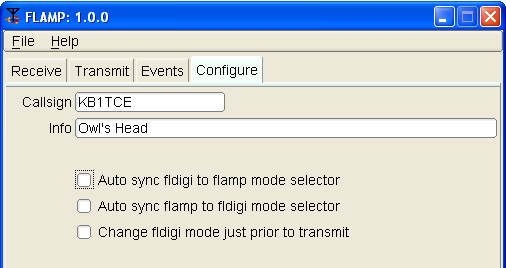
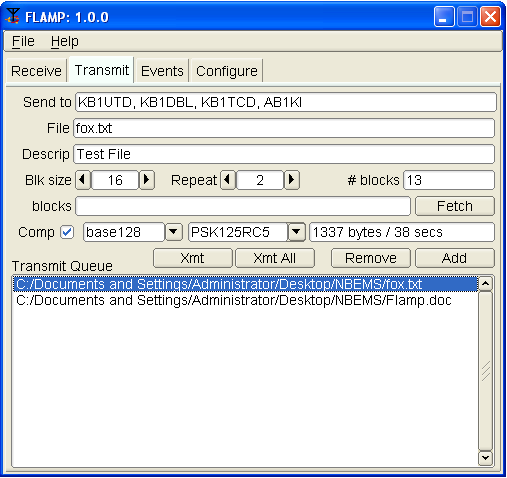
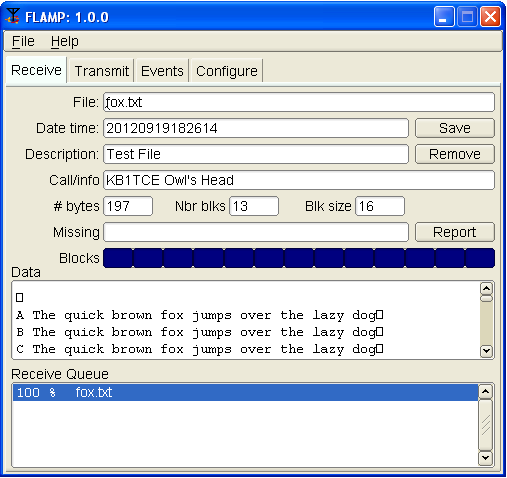
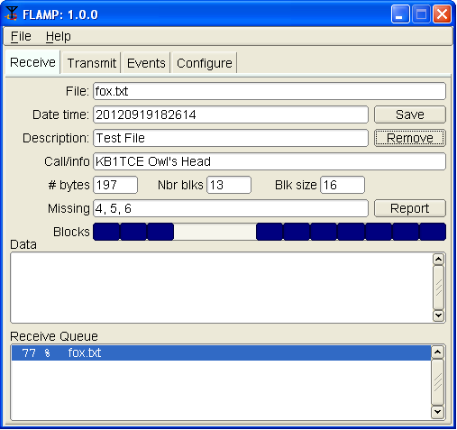
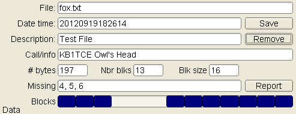
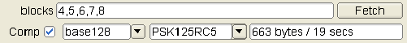
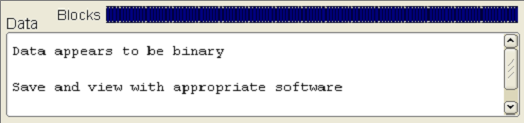
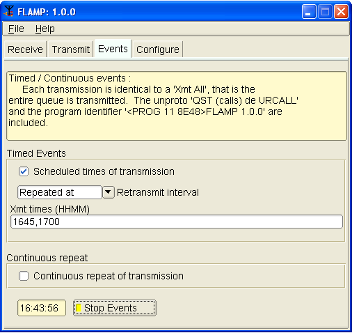
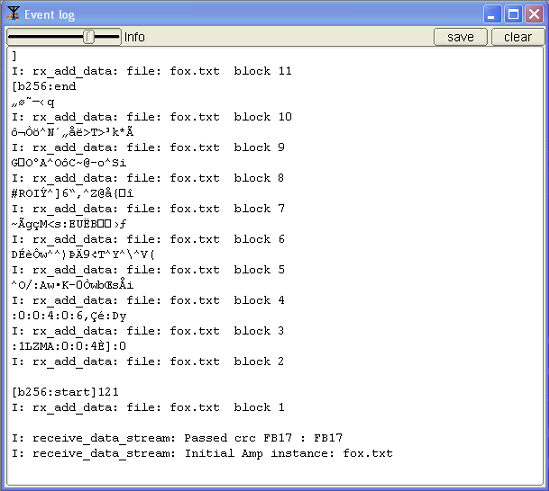

Version 1.0.0
Flamp is a program for AMP or Amateur Multicast Protocol. An flamp session will transmit one or more files with one or more iterations of the transmission. Each file is broken into blocks, each of which has a check sum. The receiving station saves the blocks that pass check sum. Successive transmissions will fill in the missing blocks provided that the new blocks pass the check sum. After the transmission sequence, the entire file is assembled and may be saved. “Fills” may be provided by retransmitting the entire file or by the sending station only sending the missing blocks.
Start by downloading the current version of flamp from w1hkj.com/alpha/flamp. Install the software as you would any of the NBEMS applications. You should also uninstall any older or development versions.
|  |
When you open flamp you will see a screen with four tabs, Receive, Transmit, Events and Configure. Click on the Configure tab and fill in your call sign and relevant information as shown below. There are also three check boxes. The functions of these will be covered later. |
|  | Flamp divides a message file into blocks, each of which will be checked for errors when received. You can select the block size with the Blk size selector. The range is from 16 to 2048. Flamp will repeat the transmission from 1 to 10 times. Select the appropriate number based on transmission mode (i.e. mode performance), propagation conditions, permissible transmit time (e.g. repeater time out), etc. The file identification is based on the date and time of the last file modification. Therefore, additional transmission sequences may be performed if necessary as long as the file is not changed. If the file is modified, flamp will treat the file as a new file. On the Send to line you may add any specific recipients for the file. The default is “QST” (general call to all amateur radio operators) which may not be appropriate in some countries. To send a file, it has to be added to the queue. Click Add and then browse for the file. Flamp will handle any file format. You have the option to compress the file with the Comp check box and select the level of encoding: base-64, base-128, or base-256. A warning dialog will be displayed if the compression is not selected and a file is added to the transmit queue that requires compression (images, all files with high bit set bytes, etc). The blocks
line and Fetch button
will be discussed later. This is used for filling in missing blocks
without a full repeat of the file transmission.
|
|
Flamp provides some additional information. When you select the compression/no compression option and the mode (in this case PSK125RC5), you will see the file size, number of blocks and estimated transmission time. This is useful for determining tradeoffs in terms of mode, repeats, compression and block size. Please note that the file size is the total transfer size (in bytes) and includes the AMP header overhead. In the example figure, the small fox.txt file will take 38 seconds to send twice with the selected mode and parameters. The larger Flamp.doc file is 12.2 kB and would take 5 minutes, 48 seconds by itself using the selected parameters.
When the file has been added to the Transmit Queue, you may add a file description in the Descrip line. This could be just a basic description of the file or have handling instructions. If sending just one file, you must highlight the file in the queue and press the Xmt button to transmit. This will place the file name and description in the corresponding lines. If you have more than one file in the queue, you may transmit all of the files by clicking Xmt Queue. Highlighting is not necessary. |
|
Flamp and fldigi have the capability to synchronize modes, i.e. you only have to set the mode on one or the other and the second will follow. This feature may also be disabled so that the mode being used with fldigi at a given moment can be independent of the mode being used for flamp file transfers.
|
On the Configure
screen there are three options as shown. The
first option auto syncs fldigi to the mode selected on flamp. The
second syncs flamp to the mode selected on fldigi. These two options
are not mutually exclusive: if the first two options are selected,
the mode selection is bilateral.
If none of the boxes is checked, there will be no synchronization. Before transmitting, an flamp-compatible version of fldigi must be running with the mode selected and frequency clear.
|
|  |
The receiving stations must have flamp open with fldigi running. Fldigi will not “wake up” flamp as it does with, for example, flmsg. The receive operation is hands-off. As the blocks are received the file information is filled in (file name, date/time, etc.) and the successfully received blocks will be depicted as dark blue rectangles on the progress bar. The blocks are positional. That is, a missing block will simply be a white space where the block would be if received correctly. On subsequent receptions that block will fill in when received correctly. The percent complete on the respective line also shows the state of each file being received. |
||||||||
|  | You will also see block numbers showing up in the
Missing line. When the complete file is received, that line
should be blank. Received text files will
appear in complete form and readable in the Data panel. To save a file, click Save with the file highlighted. This will place the file in the rx folder in the default directory:
The received file size is the actual file size, i.e. the actual bytes being transported (per repeat) less all of the Amp header information.
|
KB1UTD, KB1DBL, KB1TCD, AB1KI DE KB1TCE
<PROG 13 C0C7>FLAMP 1.0.0AU
<FILE 22 FB17>20120919182614:fox.txt
<ID 17 1EFA>KB1TCE Owl's Head
Etc.
|  | This image shows a partially completed
file. Three blocks were missed in the first pass and they will
(hopefully) be filled in during a repeated transmission.
Note that the blocks with errors show up in the Missing line. In this case, blocks 4, 5 and 6 were received with errors. The Receive Queue panel will show the percent received. Nothing will appear in the Data panel. |
If a transmission sequence has been completed and one or more stations have missing blocks, the receiving operators may request the fill-in blocks using the Report button.
The Report button adds a text stream to the fldigi Tx buffer, but does not start the fldigi transmit processing. The recipient sends the Tx buffer using the T/R command when it is his or her turn to make the report. The report format in AB1KI’s fldigi transmit panel will look like this:
DE AB1KI
File : fox.txt
<MISSING 12 5803>{FB17}4 5 6
DE AB1KI K
If there were no missing blocks, a report of receipt confirmation will be sent. For our example it would be of the form:
DE AB1KI
File : fox.txt
<MISSING 15 9DA0>{FB17}CONFIRMED
DE AB1KI K
The important word is “CONFIRMED.” The “<MISSING” is the line descriptor. The “15” the length of the data block “{FB17}CONFIRMED.” The “9DA0” is the checksum associated with the data block, and the “FB17” is the checksum of the file being processes (may be multiple files being reported). This is necessary to ensure that there are no false reports received.
For small files, another transmission of the complete file should suffice for fill-ins. In the case of a large file where only a few blocks are missing, flamp permits the sending station to just transmit the missing blocks.
When the sender has received all of the block missing reports he or she then retrieves the reports from fldigi by pressing the Fetch button. Flamp and fldigi communicate with each other using either fldigi's ARQ socket server or its xmlrpc socket server. These are two different processes with two different aims. The ARQ socket is used for sending and receiving the actual flamp messages. The xmlrpc socket is used for control processing, shared data exchange, and in this instance to read all of the fldigi Rx data received since the last retrieval.
Flamp parses all of the received data from one or more reporting stations. It combines them, discards duplicates and sorts the missing blocks numerically. It then updates the "blocks" entry control with the requested blocks.
The combined set of missing blocks will appear as shown below along with total file size and transmission time.

Flamp will send any file format. For example, ICS forms from Flmsg may be sent as well as spreadsheets in csv format or even binary files such as the Flamp.doc file as shown in the Transmit capture.
In the case of binary files, a message will be displayed upon receipt as shown below.

Flamp can transmit the queued files on a specified interval, on a timed schedule or continuously. This is configured via the Events tab.
|  |
This example below shows that the transmission will be repeated twice at two specified times. Timing is initiated with the Start/Stop button at the bottom. The times do not have to be sequential.
When executing the One time at event schedule, if there are multiple times in the Xmt time control, each event time will be removed from the Xmt time control as it is processed. When all times are exhausted the Start/Stop Events button is toggled. When Repeated at is selected then the event times are as delineated in the Xmt times (HHMM) control block. In the example above the transmission would occur every day at 1645 and 1700 Zulu. Other options include various repeat intervals (5, 15, 30 minutes; hourly, even hours, odd hours) and one time repeat at a specified time. Continuous repeat works exactly as you would expect. The timer is based on 1-second intervals, which will result in a 1-second silent period between transmissions. |
|  | An Event Log has been added to flamp
for debug purposes. It will capture events such as failed headers,
data blocks etc. To access the Event Log, click Help – Events on
the Flamp screen.
The slider may be used to select 5 levels of event capture: Quiet, Error, Warning, Info (default) and Debug. The log may be saved. The saved log will be placed in the flamp folder. |
The text file used in the examples consists of 26 iterations of “The quick brown fox….” as shown below:
A The quick brown fox jumps over the
lazy dog
B The quick brown fox jumps over the
lazy dog
|
Z The quick brown fox jumps over the lazy dog
A copy of the Fldigi receive panel with the information entered as shown in the screen captures is below.
KB1UTD, KB1DBL, KB1TCD, AB1KI DE
KB1TCE
<PROG 13 0F06>FLAMP 1.0.0AZ
<FILE 22
B49B>20120910221518:fox.txt
<ID 17 1EFA>KB1TCE Owl's Head
<SIZE 15 DEDA>{B49B}197 13 16
<DESC 15 410E>{B49B}Test File
<DATA 24
7A59>{B49B:1}[b128:start]121
<DATA 24
4ED9>{B49B:2}:0S=$j:4:0:0:22=
<DATA 24
F3C9>{B49B:3}P:0:0:0:4:0:1P,?
<DATA 24
C843>{B49B:4}%~y:7Ka'<U=-=4Nv
<DATA 24
EC40>{B49B:5}=1gE4Q==FQn==wXC
<DATA 24
456B>{B49B:6}M:9(==:5E:7v:BOg
<DATA 24
F315>{B49B:7}&O=?zW=B@d=8=:B$
<DATA 24 5059>{B49B:8}O$w#S4N:4=
9/<UW
<DATA 24
8F7A>{B49B:9}\Gnbyi}i:2=z=od:
<DATA 25
1FE3>{B49B:10}15:C=4}=M=X=4B9=
<DATA 25
0966>{B49B:11}3rP}35JX8'b1=E\
<DATA 25 B155>{B49B:12}:0:0:0:0:0
[b128
<DATA 14 8F47>{B49B:13}:end]
<CNTL 5 9016>{EOF}
<CNTL 5 301A>{EOT}
KB1UTD, KB1DBL, KB1TCD, AB1KI DE
KB1TCE K